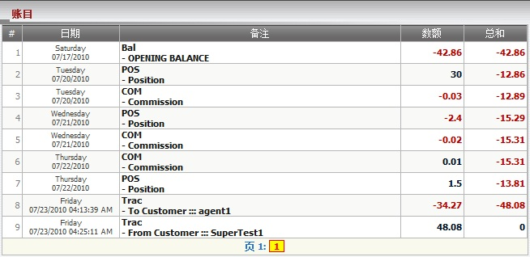

账目
定义:
这是一个简短的报告, 总计每天的输赢, 佣金, 转账数额及帮助总代理保持追踪他/她的每日收入。

图 1.1
如何理解报告:
从图1.1, 总代理可以得到他/她的报告摘要。
例如:
- 星期六 07/17/2010, 为期初余额日, 总代理至该日的总余额为 -42.86.
- 星期二 07/20/2010, 总代理基于占成数获得30, 然后他/她的余额 = -42.86 + 30 = -12.86.
- 星期二 07/20/2010, 总代理在支付代理佣金后失去0.03佣金, 然后他/她的余额 = -12.86 - 0.03 = -12.89.
- 星期三 07/21/2010, 总代理基于占成数输额2.4, 然后他/她的余额 = -12.89 - 2.4 = -15.29.
- 星期三 07/21/2010, 总代理在支付代理佣金后失去0.02佣金, 然后他/她的余额 = -15.29 - 0.02 = -15.31.
- 星期四 07/22/2010, 总代理在支付代理佣金后得到0.01佣金, 然后他/她的余额 = -15.31 + 0.01 = -15.31.
- 星期四 07/22/2010, 总代理基于占成数赢额1.5, 然后他/她的余额 = -15.31 + 1.5 = -13.81.
- 星期五 07/23/2010, 总代理转账34.27到agent1, 然后他/她的余额 = -13.81 - 34.27 = -48.08.
- 星期五 07/23/2010, 总代理从supertest1收到48.08, 然后他/她的余额 = -48.08 + 48.08 = 0.
备注: 显示相关日期的活动。
| 备注类别 |
描述 |
| POS |
总代理占成数. |
| COM |
总代理佣金. |
| Bal |
总代理余额. |
| Trac |
总代理与上线及下线的转账 |